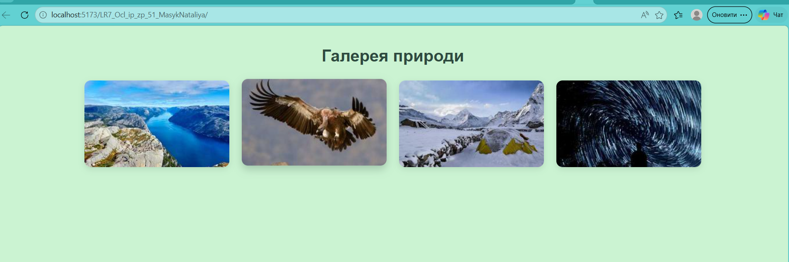
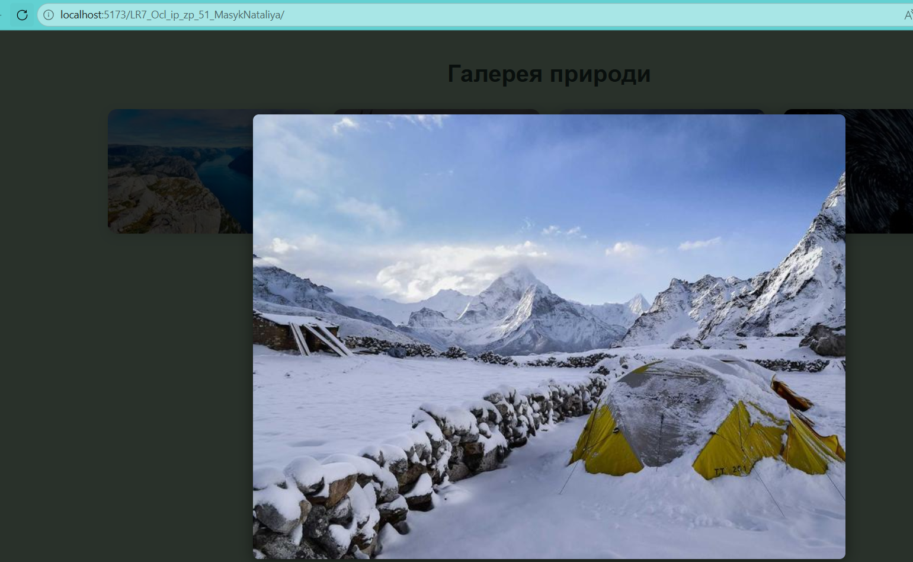
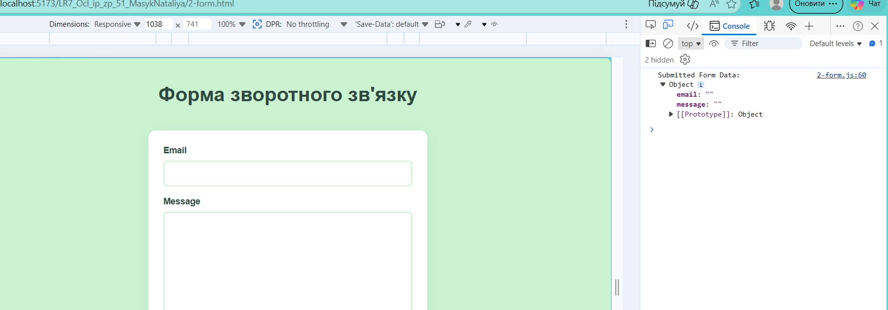
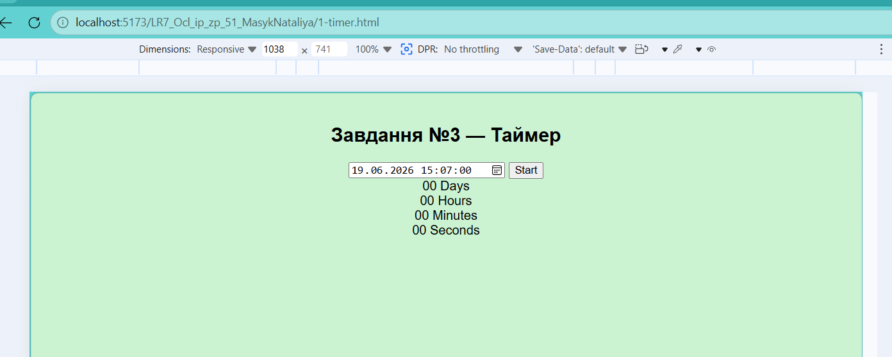
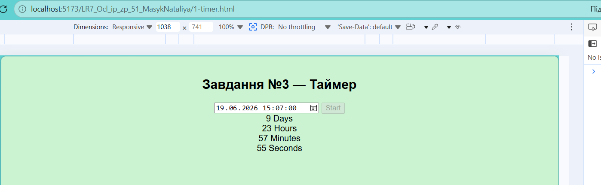
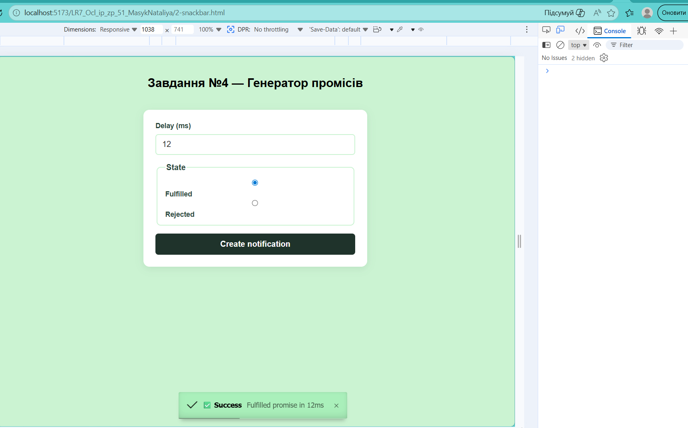
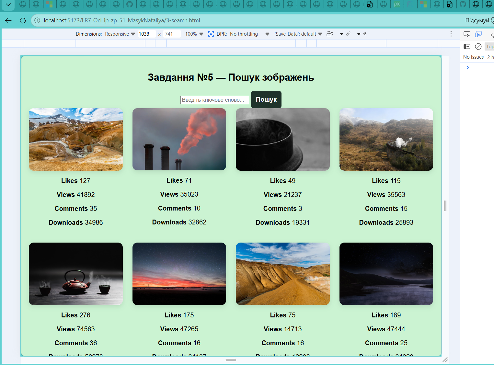

ЗВІТИ З ЛАБОРАТОРНИХ РОБІТ З
ДИСЦИПЛІНИ “Проєктування WEB-застосувань”
Лабораторна робота №7
ЗАВДАННЯ №1
Формулювання: Створити окремий репозиторій у GitHub.
Створити посилання на живу сторінку.
Склонувати репозиторій на свій комп’ютер.
Створити файл index.html і дві папки: CSS та JS.
У папці CSS створити файл style.css.
У папці JS створити файл gallery.js.
У програмі Figma створити макет галереї довільних зображень.
Виконати верстку власного макету. В HTML коді (index.html) додати тег
контейнера галереї — невпорядкований список із класом gallery, згідно макету.
У свій JavaScript файл додати масив зображень. Кожний об’єкт являє собою один елемент галереї:
const images = [
{
preview: 'https://…..',
original: 'https://….',
description: 'текстовий опис зображення',
},
{
preview: 'https://…..',
original: 'https://….',
description: 'текстовий опис зображення',
},
// додаєте потрібну кількість зображень
];
Виконати в JavaScript коді розмітку елементів, після чого додати усю розмітку всередину ul.gallery.
Додати стилізацію галереї згідно макету.
Виконати делегування: додати функціонал прослуховування кліка по елементах галереї та отримання посилання на велике зображення при кліку.
Підключити бібліотеку basicLightbox через CDN сервіс jsdelivr та додати у HTML файл посилання на мініфіковані JS та CSS файли.
Доповнити код так, щоб при кліку по елементу галереї відкривалось модальне вікно підключеної бібліотеки.
Документація: basicLightbox Readme
Приклади: basicLightbox Demo
<script type="module">
import { images } from "./images.js";
// Імпортуємо бібліотеку та її стилі для Vite
import * as basicLightbox from "basiclightbox";
import "basiclightbox/dist/basicLightbox.min.css";
const gallery = document.getElementById("gallery");
// 1. Генерація розмітки галереї
gallery.innerHTML = images
.map(
(img) => `
<li class="gallery-item" data-source="${img.original}">
<img class="gallery-image" src="${img.preview}" alt="${img.description}" />
</li>
`,
)
.join("");
// 2. Делегування подій на батьківський елемент 'ul#gallery'
gallery.addEventListener("click", onGalleryItemClick);
function onGalleryItemClick(event) {
event.preventDefault();
const isImageTarget = event.target.classList.contains("gallery-image");
if (!isImageTarget) return;
const parentListItem = event.target.closest(".gallery-item");
const largeImageUrl = parentListItem.dataset.source;
const imageAlt = event.target.alt;
// 3. Ініціалізація та відкриття модального вікна
const instance = basicLightbox.create(`
<div class="modal">
<img src="${largeImageUrl}" alt="${imageAlt}" width="800" height="600" />
</div>
`);
instance.show();
// Закриття модального вікна по Escape
const handleEscape = (e) => {
if (e.code === "Escape") {
instance.close();
document.removeEventListener("keydown", handleEscape);
}
};
document.addEventListener("keydown", handleEscape);
}
</script>
<script type="module">
export const images = [
{
preview: "https://picsum.photos/id/1015/250/150",
original: "https://picsum.photos/id/1015/800/600",
description: "Гірський пейзаж",
},
{
preview: "https://picsum.photos/id/1024/250/150",
original: "https://picsum.photos/id/1024/800/600",
description: "Собака на природі",
},
{
preview: "https://picsum.photos/id/1036/250/150",
original: "https://picsum.photos/id/1036/800/600",
description: "Лісова дорога",
},
{
preview: "https://picsum.photos/id/1042/250/150",
original: "https://picsum.photos/id/1042/800/600",
description: "Морський берег",
},
];
</script>
Результати:


- Посилання на репозиторій: GitHub Repository
- Посилання на сайт: Live Demo
ЗАВДАННЯ №2
Формулювання: Реалізувати форму зворотного зв’язку, яка
зберігає дані користувача у локальному сховищі та відновлює їх після
перезавантаження сторінки.
Виконати завдання у файлах 2-form.html та 2-form.js.
У HTML додати розмітку форми, а у JS написати скрипт, який буде зберігати
значення полів у локальне сховище при введенні даних.
Підзавдання:
Оголосити глобальний об’єкт formData з полями
email та message, які спочатку мають порожні рядки.
Використати делегування події input для відстеження змін у
формі. Зберігати актуальні дані у formData та записувати їх у
localStorage під ключем "feedback-form-state".
При завантаженні сторінки перевіряти, чи є дані у сховищі. Якщо так —
заповнити ними форму та об’єкт formData. Якщо ні — залишити поля
порожніми.
При сабміті перевіряти, чи заповнені обидва поля. Якщо ні — показати
повідомлення «Fill please all fields». Якщо так — вивести у консоль об’єкт
formData, очистити сховище, об’єкт і поля форми.
Варто звернути увагу:
• На живій сторінці відображається форма з двома елементами та кнопкою
submit.
• Форма стилізована згідно макету.
• Події input і submit обробляються через JS.
• Дані зберігаються у localStorage без пробілів по краях.
• При оновленні сторінки дані відновлюються у форму без значень
undefined.
• При сабміті виконується перевірка заповненості полів, вивід у консоль та
очищення сховища.
<script>
// Ключ для локального сховища
const STORAGE_KEY = "feedback-form-state";
// Оголошення глобального об'єкта стану форми
const formData = {
email: "",
message: "",
};
const form = document.querySelector(".feedback-form");
const emailInput = form.elements.email;
const messageInput = form.elements.message;
// 1. ПЕРЕВІРКА СХОВИЩА ПРИ ЗАВАНТАЖЕННІ СТОРІНКИ
populateForm();
function populateForm() {
const savedState = localStorage.getItem(STORAGE_KEY);
if (savedState) {
try {
const parsedData = JSON.parse(savedState);
// Заповнюємо об'єкт formData і поля форми, уникаючи undefined
formData.email = parsedData.email?.trim() || "";
formData.message = parsedData.message?.trim() || "";
emailInput.value = formData.email;
messageInput.value = formData.message;
} catch (error) {
console.error("Помилка парсингу даних з localStorage:", error);
}
}
}
// 2. ДЕЛЕГУВАННЯ ПОДІЇ INPUT (Відстеження змін)
form.addEventListener("input", onFormInput);
function onFormInput(event) {
// Записуємо значення, очищаючи від пробілів по краях за допомогою trim()
formData[event.target.name] = event.target.value.trim();
// Зберігаємо актуальний об'єкт у локальне сховище
localStorage.setItem(STORAGE_KEY, JSON.stringify(formData));
}
// 3. ОБРОБКА САБМІТУ ФОРМИ
form.addEventListener("submit", onFormSubmit);
function onFormSubmit(event) {
event.preventDefault();
// Перевірка актуальних значень в об'єкті (чи заповнені обидва поля)
if (!formData.email || !formData.message) {
alert("Fill please all fields");
return;
}
// Якщо все заповнено — виводимо об'єкт у консоль
console.log("Submitted Form Data:", formData);
// Очищаємо локальне сховище
localStorage.removeItem(STORAGE_KEY);
// Очищаємо об'єкт formData
formData.email = "";
formData.message = "";
// Очищаємо поля форми
form.reset();
}
</script>
Результати:


- Посилання на репозиторій: GitHub Repository
- Посилання на сайт: Live Demo
ЗАВДАННЯ №3
Формулювання: Реалізувати таймер зворотного відліку до певної дати.
Виконати завдання у файлах 1-timer.html та 1-timer.js.
Такий таймер може використовуватися у блогах, інтернет-магазинах, сторінках
реєстрації подій, під час технічного обслуговування тощо.
Елементи інтерфейсу:
Бібліотека flatpickr: використовується для вибору кінцевої дати й часу. Підключається через імпорт:
import flatpickr from "flatpickr";
import "flatpickr/dist/flatpickr.min.css";
Бібліотека iziToast: використовується для повідомлень користувачеві
замість alert().
import iziToast from "izitoast";
import "izitoast/dist/css/iziToast.min.css";
Логіка роботи:
• При першому завантаженні сторінки кнопка Start неактивна.
• При виборі дати в минулому з’являється повідомлення «Please choose a date in the future» і кнопка лишається неактивною.
• При виборі майбутньої дати кнопка стає активною.
• Натисканням на кнопку Start запускається таймер, який щосекунди обчислює різницю між поточним часом і обраною датою.
• Для підрахунку використовується функція convertMs(), яка повертає об’єкт {days, hours, minutes, seconds}.
• Для форматування чисел застосовується функція addLeadingZero() з методом padStart().
• Коли час доходить до нуля, таймер зупиняється, інпут знову стає активним, а кнопка лишається неактивною.
На що звертає увагу ментор:
• Підключені бібліотеки flatpickr та iziToast.
• Коректна робота кнопки Start (активна лише при виборі майбутньої дати).
• Таймер відображає час у форматі xx:xx:xx:xx та оновлюється щосекунди.
• При досягненні кінцевої дати інтерфейс показує 00:00:00:00.
<script type="module">
import flatpickr from "flatpickr";
import "flatpickr/dist/flatpickr.min.css";
import iziToast from "izitoast";
import "izitoast/dist/css/iziToast.min.css";
const startBtn = document.querySelector("[data-start]");
const daysEl = document.querySelector("[data-days]");
const hoursEl = document.querySelector("[data-hours]");
const minutesEl = document.querySelector("[data-minutes]");
const secondsEl = document.querySelector("[data-seconds]");
const inputEl = document.querySelector("#datetime-picker");
let userSelectedDate = null;
let timerId = null;
startBtn.disabled = true;
const options = {
enableTime: true,
time_24hr: true,
defaultDate: new Date(),
minuteIncrement: 1,
onClose(selectedDates) {
const selectedDate = selectedDates[0];
if (selectedDate <= new Date()) {
iziToast.error({
title: "Error",
message: "Please choose a date in the future",
});
startBtn.disabled = true;
} else {
userSelectedDate = selectedDate;
startBtn.disabled = false;
}
},
};
flatpickr(inputEl, options);
startBtn.addEventListener("click", () => {
startBtn.disabled = true;
inputEl.disabled = true;
timerId = setInterval(() => {
const diff = userSelectedDate - new Date();
if (diff <= 0) {
clearInterval(timerId);
updateTimerUI({ days: 0, hours: 0, minutes: 0, seconds: 0 });
inputEl.disabled = false;
return;
}
updateTimerUI(convertMs(diff));
}, 1000);
});
function convertMs(ms) {
const second = 1000;
const minute = second * 60;
const hour = minute * 60;
const day = hour * 24;
const days = Math.floor(ms / day);
const hours = Math.floor((ms % day) / hour);
const minutes = Math.floor(((ms % day) % hour) / minute);
const seconds = Math.floor((((ms % day) % hour) % minute) / second);
return { days, hours, minutes, seconds };
}
function addLeadingZero(value) {
return String(value).padStart(2, "0");
}
function updateTimerUI({ days, hours, minutes, seconds }) {
daysEl.textContent = days;
hoursEl.textContent = addLeadingZero(hours);
minutesEl.textContent = addLeadingZero(minutes);
secondsEl.textContent = addLeadingZero(seconds);
}
</script>
>
Результати:


- Посилання на репозиторій: GitHub Repository
- Посилання на сайт: Live Demo
ЗАВДАННЯ №4
Формулювання: Реалізувати генератор промісів, який створює
повідомлення про виконання або відхилення промісу із заданою затримкою.
Виконати завдання у файлах 2-snackbar.html та
2-snackbar.js. Подивитися демовідео роботи генератора промісів.
HTML-розмітка форми:
Логіка роботи:
• При сабміті форми створюється проміс із затримкою, яку користувач задає у полі delay.
• Якщо обрано стан fulfilled, проміс виконується через метод resolve().
• Якщо обрано стан rejected, проміс відхиляється через метод reject().
• Значенням промісу є кількість мілісекунд затримки.
• Результат обробляється через .then() та .catch().
• Для повідомлень використовується бібліотека iziToast, яка показує
повідомлення про успіх або помилку замість console.log().
Приклад повідомлень:
• Успішне виконання: ✅ Fulfilled promise in ${delay}ms
• Відхилення: ❌ Rejected promise in ${delay}ms
На що звертає увагу ментор:
• Підключена бібліотека iziToast.
• При виборі стану в радіокнопках і натисканні на кнопку Create notification
з’являється повідомлення відповідного стилю із затримкою у мілісекундах.
• Повідомлення містить тип обраного стану та кількість мілісекунд згідно з шаблоном.
-
Animals
- Cat
- Hamster
- Horse
- Parrot
-
Products
- Bread
- Prasley
- Cheese
-
Technologies
- HTML
- CSS
- JavaScript
- React
- Node.js
<script type="module">
import iziToast from "izitoast";
import "izitoast/dist/css/iziToast.min.css";
const form = document.querySelector(".form");
form.addEventListener("submit", (event) => {
event.preventDefault();
const delay = Number(form.elements.delay.value);
const state = form.elements.state.value;
// Створюємо проміс
const promise = new Promise((resolve, reject) => {
setTimeout(() => {
if (state === "fulfilled") {
resolve(delay);
} else {
reject(delay);
}
}, delay);
});
// Обробка результату
promise
.then((delay) => {
iziToast.success({
title: "✅ Success",
message: `Fulfilled promise in ${delay}ms`,
});
})
.catch((delay) => {
iziToast.error({
title: "❌ Error",
message: `Rejected promise in ${delay}ms`,
});
});
});
</script>
>
Результати:

-
Посилання на репозиторій:
- Посилання на репозиторій: GitHub Repository
- Посилання на сайт: Live Demo
ЗАВДАННЯ №5
Формулювання: Створити застосунок пошуку зображень за ключовим словом
і їх перегляду в галереї. Виконати завдання у файлах 3-search.html та
3-search.js. Додати оформлення елементів інтерфейсу згідно з макетом.
Форма пошуку:
• При сабміті форми виконується HTTP-запит до API сервісу Pixabay.
• Перед відправкою запиту перевіряється, чи поле пошуку не порожнє.
• Якщо поле порожнє — показується повідомлення через iziToast.warning().
HTTP-запити:
https://pixabay.com/api/?key=YOUR_API_KEY&q=SEARCH_QUERY
&image_type=photo&orientation=horizontal&safesearch=true
• Використовуються параметри: key, q, image_type,
orientation, safesearch.
• Якщо масив hits порожній — показується повідомлення
«Sorry, there are no images matching your search query. Please try again!» через
iziToast.error().
Галерея і картки зображень:
• Кожна картка містить маленьке фото (webformatURL), посилання на велике фото
(largeImageURL), опис (tags) та статистику: лайки, перегляди, коментарі,
завантаження.
• Перед новим пошуком галерея очищається.
• Нові елементи додаються в DOM за одну операцію.
Бібліотека SimpleLightbox:
import SimpleLightbox from "simplelightbox";
import "simplelightbox/dist/simple-lightbox.min.css";
• Картки обгорнуті у посилання для відкриття великої версії зображення.
• Після додавання нових елементів викликається метод lightbox.refresh().
Індикатор завантаження:
• Перед початком запиту індикатор показується. • Після завершення запиту індикатор зникає. • Для стилізації можна використати бібліотеку css-loader.
На що звертає увагу ментор:
- Домашня робота містить два посилання: на вихідні файли і живу сторінку на GitHub Pages.
- Проєкт зібраний за допомогою Vite.
- Консоль не містить помилок і попереджень.
- Підключені бібліотеки iziToast, SimpleLightbox та css-loader.
- Елементи стилізовані згідно макету.
- Форма пошуку працює коректно, індикатор завантаження з’являється і зникає.
- При відсутності результатів показується повідомлення про помилку.
- При кліку на картку відкривається велике фото у модальному вікні.
<script type="module">
window.global = window;
import iziToast from "izitoast";
import "izitoast/dist/css/iziToast.min.css";
import SimpleLightbox from "simplelightbox";
import "simplelightbox/dist/simple-lightbox.min.css";
const form = document.getElementById("search-form");
const input = document.getElementById("search-input");
const gallery = document.getElementById("gallery");
const loader = document.getElementById("loader");
const LightboxConstructor = SimpleLightbox.default || SimpleLightbox;
const lightbox = new LightboxConstructor("#gallery a", {
captionsData: "alt",
captionDelay: 250,
});
form.addEventListener("submit", async (event) => {
event.preventDefault();
const query = input.value.trim();
if (!query) {
iziToast.warning({
title: "Warning",
position: "topRight",
message: "Введіть ключове слово для пошуку!",
});
return;
}
gallery.innerHTML = "";
loader.classList.remove("hidden");
try {
const response = await fetch(
"https://pixabay.com/api/?key=56210473-e210368ea5e764e12547e4976&q=" +
encodeURIComponent(query) +
"&image_type=photo&orientation=horizontal&safesearch=true",
);
if (!response.ok) {
throw new Error("Network response was not ok");
}
const data = await response.json();
loader.classList.add("hidden");
if (data.hits.length === 0) {
iziToast.error({
title: "Error",
position: "topRight",
message:
"Sorry, there are no images matching your search query. Please try again!",
});
return;
}
const markup = data.hits
.map(
(img) => `
<li class="gallery-item">
<a class="gallery-link" href="${img.largeImageURL}">
<img src="${img.webformatURL}" alt="${img.tags}" class="gallery-image" />
</a>
<div class="info">
<p class="info-item"><b>Likes</b> <span class="info-value">${img.likes}</span></p>
<p class="info-item"><b>Views</b> <span class="info-value">${img.views}</span></p>
<p class="info-item"><b>Comments</b> <span class="info-value">${img.comments}</span></p>
<p class="info-item"><b>Downloads</b> <span class="info-value">${img.downloads}</span></p>
</div>
</li>
`,
)
.join("");
gallery.innerHTML = markup;
lightbox.refresh();
form.reset();
} catch (error) {
loader.classList.add("hidden");
iziToast.error({
title: "Error",
position: "topRight",
message: "Сталася помилка при завантаженні зображень!",
});
console.error("Помилка під час виконання запиту:", error);
}
});
</script>

- Посилання на репозиторій: GitHub Repository
- Посилання на сайт: Live Demo
ВИСНОВКИ
У ході виконання лабораторної роботи №6 було розглянуто та реалізовано низку практичних завдань з використанням мови програмування JavaScript та роботи з DOM. Кожне завдання мало на меті закріплення навичок створення інтерактивних елементів веб‑сторінки:
-
Використання
console.log(),alert()та взаємодії з інпутами й кнопками для роботи з даними користувача. -
Реалізація приховування та розкриття введеної інформації за допомогою
зміни атрибутів
typeта тексту кнопки. -
Додавання слухачів подій на
windowдля визначення кліку у конкретний елемент сторінки. - Використання навігації по DOM для підрахунку категорій та елементів у списках.
-
Управління формою логіна з валідацією даних через JavaScript без
використання атрибутів
required. - Зміна кольору фону сторінки та відображення значення кольору у текстовому елементі.
- Створення та очищення колекції блоків із випадковими кольорами та поступовим збільшенням розміру.
Виконання завдань дозволило закріпити знання з роботи з подіями, DOM‑елементами, циклами та функціями. Лабораторна робота сприяла формуванню практичних навичок створення інтерактивних інтерфейсів та підготовці до більш складних завдань у веб‑розробці.